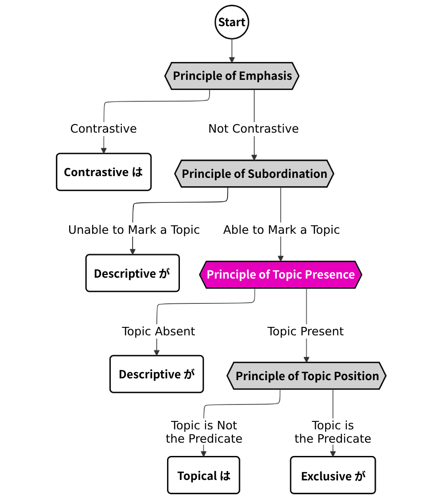
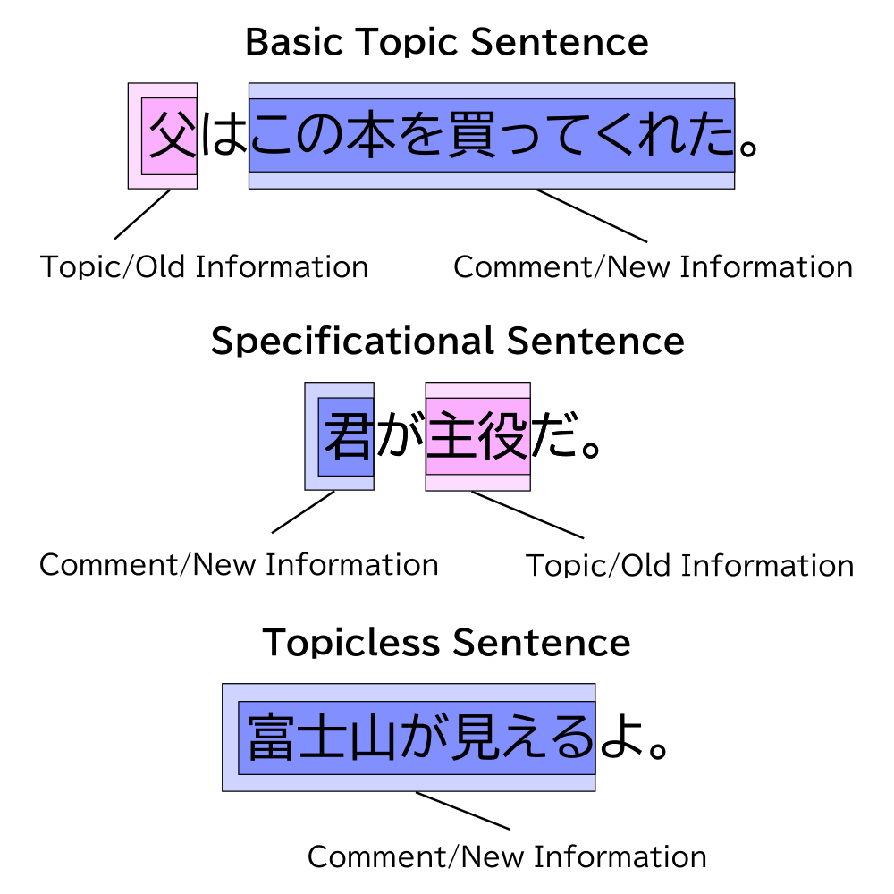

This article is one in a series that comprehensively explains usage of は vs. が in Japanese. Most content is directly pulled from 『｢は｣ と ｢が｣』 by Hisashi Noda.

Is There a Topic?
The principle of topic presence decides whether or not the clause/sentence contains a topic. For brevity, I’ll refer to both clauses and sentences without a topic as topicless sentences, and those with a topic as topic sentences moving forward. If we find that a clause or sentence has no topic, we know that a subject within it will always be marked by descriptive が (sometimes contrastive は) and never topical は.
At this stage in the flowchart, we need to distinguish topic sentences from topicless sentences. Topicless sentences fit into the ｢富士山が見えるよ。｣ structure, and topic sentences fit into all other structures.
There are many different factors to consider at this stage, which I will summarize in the table below. The cells in bold are cases where the sentence/clause will always fall into the category it is under. The unbolded cases will sometimes fall into the other sentence category. Usually, this happens because the sentence also fulfills some properties in that other category.
| Topic Sentences | Topicless Sentences | |
|---|---|---|
| Predicate | Permanent state or habitual action not directly observable to the speaker | Event or temporary state directly observable to the speaker, expressed at that moment |
| Transitive verb that expresses someone doing something (volition) | Intransitive verb that expresses something happening (no volition) | |
| Subject/Topic | Interrogative word (e.g. 誰, どれ, どこ, 何) | Unidentified noun (e.g. 誰か, 何か, 知らない人) |
| Familiar information | Not familiar information | |
| Sentence Function | Explains something about some topic | Describes something unexpected happening |
| Word Order | Subject + Case-Marked nouns + Predicate | Case-Marked nouns + Subject + Predicate |
| Context | Continues on a theme | Changes subject matter |
Topic Sentences
Cases That Are Always Topic Sentences
Let’s look at the cases where the sentence/clause must have a topic.
The first of these cases is when the predicate describes a permanent state not directly observable to the speaker. A permanent state is something that doesn’t happen throughout a period of time.
In practice, this means that almost all sentences/clauses with a noun as its predicate will be topic sentences since most nouns don’t imply a temporary state1. Predicates that are adjectives like 高い or verbs like すぐれている which don’t imply a temporary state also commonly lead to topic sentences. Example (1) is a topic sentence with an adjective predicate that expresses a permanent state.
1. バクテリア類が生物生態系全体の中で果たしている役割はたいへん重要である。
The role bacteria play in our entire ecosystem is incredibly important.
When the predicate expresses some action or temporary state, the sentence might still have a topic if it’s some action done habitually. This is effectively a permanent state.
2. ゴリラは、毎日昼と夜の二回寝床をつくって寝る。
Gorillas build their nests and sleep twice a day, once at noon and once at night.
The other case that necessitates that the sentence/clause has a topic covers questions that contain an interrogative word, like 誰, どれ, どこ, and 何. When the interrogative word is the subject of the sentence, it is typically marked by exclusive が, which makes it a specificational sentence. Remember that specificational sentences count as topic sentences, because their predicate refers to the topic.
3. ｢[誰が[やったん]だと]思う？｣
“Who do you think did it?”
Cases That Are Likely Topic Sentences
Apart from these cases, there are also situations where a topic is more likely to be expressed, but not always necessarily. These are covered under the following bullet points, with examples (4) through (11).
- Sentences are likely to be have a topic if the predicate is a transitive verb.
4. 陸上競技場の下はでっかい浄水場に⸺ 大阪府水道部は二十三日、こんな新浄水場の建設計画を発表しました。
An enormous water purification plant under the track and field! The Osaka Water Supply Authority announced its plans for such a construction project on the 23rd.
- Sentences are likely to be have a topic if the subject/topic is familiar information.
Familiar information is defined in the following table:
| Familiar information |
|---|
| - Anything present at the scene of the conversation. - Anything previously mentioned. - Anything related to something previously mentioned or present at the scene of the conversation. - Anything the speaker knows the listener is aware of. |
5. ｢これは楽器のお札です。受けとって下さい｣ と僕は言った。
Here’s the tag for your instrument. Please take it,” I said.
6. ｢これがあのサントス・エルナンデスの、変わり果てた姿かね。｣
“So this is what has become of the great Santos Hernandez?”
(6) is a specificational sentence where the predicate, not the familiar information, is topicalized. Specificational sentences commonly express familiar information as their subject. For this reason, you shouldn’t get into the habit of thinking everything that can be construed as familiar information will be marked as a topic.
7. パイロットの家庭は、大変なんだ。原因はすべて時差にある。
Pilots’ families have it rough. It’s all because of the time difference.
In (7), the topic “原因” (reason) is familiar information because it refers to the reason for the previous statement.
8. 気象庁は七日、阪神大震災(兵庫県南部地震)の現地調査結果を発表しました。
The Japan Meteorological Agency announced the findings from its investigation concerning the Great Hanshin earthquake on the 7th.
(8) is an example sentence from a newspaper, and it assumes the reader is familiar with the “気象庁” (Japan Meteorological Agency).
- Sentences are likely to have a topic if the subject/topic is separated from the predicate by many words (i.e., the sentence explains something about some topic).
9. 日本公開が間近に迫った ｢ジュラシック・パーク｣ は、人気作家マイケル・クライトンのベストセラーの映画化というだけでなく、ダイナミックなビジネス展開でも注目を集めている。
Jurassic Park, scheduled to premiere in Japan soon, isn’t just turning heads as a movie adaptation of Michael Crichton’s bestselling novel, but also as a bold business development.
By contrast, sentences with nothing between the subject and the predicate tend to be topicless, like (10).
10. 最近、｢特定の食物｣ 摂取後の運動、あるいは食事内容によらず｢食後二時間以内｣の運動中に出るショックが注目されている。
As of late, attention has been brought to the dangers associated with exercise after eating certain diet foods, or exercise within two hours of eating regardless of the meal.
- Sentences are likely to be have a topic if it follows the structure
Subject+Other Case-marked Noun+Predicate.
11. オムロンは家庭用向け地震警報装置｢揺れっ太｣を開発、二十日から発売する。
Omron will release its household earthquake warning device “Yuretta” on the 20th.
Topicless Sentences
Cases That Are Always Topicless Sentences
There are two cases where a sentence will always become a topicless sentence.
The first one is when the predicate describes some event or temporary state that is directly observable to the speaker. Furthermore, the sentence has to be spoken/narrated as it is being perceived. Sentences of this nature usually have verb predicates, such as 見える, 聞こえる, ある2, and 来る. The important detail about these predicates is that they all express something happening within some time frame (as opposed to something with a permanent state). Example (12) shows one of these topicless sentences with a verb predicate.
12. るり子ーッ、 高原さんがいらしたわよーッ｣
Ruriko! Takahara is here!
Adjective predicates in topicless sentences are less common, but they are more likely when the speaker is describing something that is directly observable, and spoken/narrated as it is being perceived. In example (13), “きれい” (gorgeous) is a temporary state because it refers to the gorgeousness of the moon as it is percieved by the speaker in the moment.
13. ほーら、月がきれいだよ。
Look, the moon is gorgeous!
Example (14) shows a topicless sentence with a noun predicate, which is relatively rare. These sentences sometimes violate the rule about permanent states and are easy to mistake as specificational sentences, but we can tell that this one is not an specificational sentence because its predicate is not a topic. More information about topicless noun sentences is presented in the addendum.
14. そこに現れたのが陽子だった。
It was Yoko that showed up there.
The other case that necessitates a topicless sentence is when the subject is an unidentified noun. This includes words such as 誰か, なにか, and 知らない人.
15. 十一時に誰かがやってきた。
Someone came at eleven o’clock.
Cases That Are Likely Topicless Sentences
Just like we saw with topic sentences, there are cases where a sentence is likely to be topicless, but not always necessarily. These are covered under the following bullet points, with examples (16) through (19).
- Sentences are likely to be topicless if the predicate is an intransitive verb or the passive form of a transitive verb.
16. 吹田市の万国博記念公園内にある陸上競技場の地下に、大阪府営水道の浄水場を設置することが二三日、大阪府と日本万国博覧会記念協会から発表された。
A plan to construct a water purification plant underneath the running track grounds of the Expo Commemorative Park in Suita City was jointly announced by the Prefecture of Osaka and the Commemorative Organization for the Japan World Exposition on the 23rd.
- Sentences are likely to be topicless if the subject is not familiar information.
17. ところが、その翌年、1989年の初夏にパソコン雑誌で ｢サージョンウイルス｣ が騒がれだした。
However, that following year in the summer of 1989, several PC magazines published about the so-called “Surgeon virus”.
- Sentences are likely to be topicless if it describes something unexpected happening.
18. 奈良平城宮の幹線排水路｢東大溝｣跡を発掘調査している奈良国立文化財研究所が奈良時代の木彫り面を初めて見つけ、十六日公開した。
The Nara National Institute for Cultural Properties, which has been conducting an excavation at the main drainage channel “East Oomizo” of Heijo Palace, announced on the 16th that they uncovered a carved wooden mask dating back to the Nara Period for the first time.
- Sentences are likely to be topicless if it follows the structure
Other Case-marked Noun+Subject+Predicate.
19. 地震発生時に、震度に合わせて ｢火を消しなさい｣ などの音声でとるべき行動を指示する、一般家庭用地震警報器 ｢揺れっ太｣ を、オムロンが20日から、通信販売ルートを中心に売り出す。
Omron will begin selling “Yuretta,” a household earthquake alarm which gives voice instructions to help you act accordingly based on the seismic intensity when an earthquake occurs, mainly through online sales starting from the 20th.
Duality of the Topic
From what we have discussed above, we can say that there are two main reasons why something in Japanese may become a topic.
a. The predicate is some permanent state.
20. 蘭島海岸は日本海に面した海水浴場である。
Ranshima Coast is a beach facing the Sea of Japan.
b. The topic is familiar information. It is something the listener knows about or has been previously mentioned.
21. 姉と2人でパンを食べていた。姉は ｢真夏もおわりね｣ と言った。
I was eating bread with my sister. My sister said, “So the peak of summer is over, huh?”
Of these two reasons, the one that takes priority is (a). In other words, even if something is not familiar information, it may still become a topic if the statement has a predicate expressing a permanent state. This is a useful mental shortcut and it will cover most sentences, but it is not 100% accurate for predicting は/が usage because not all familiar information is topicalized.
EXTRA: Familiar Information and New/Old Information
A popular way of teaching the difference between は/が is through the concept of “new information” (新情報) and “old information” (旧情報), but this idea is not explicitly taught in Noda’s original book. I have decided to name Noda’s concept as “familiar information”. Notice that we did not talk about “old” or “new information” when we discussed what elements become topics, but only about what is “familiar information” and “not familiar information”. These two concepts are related, but distinct from each other.
As 上林 (1988) points out, the definition of this new/old distinction has never been made rigorously clear and does not entirely describe functions of は/が if we simply define old information in the same way that we define familiar information. Noda brings up familiar information only to describe tendencies regarding topicalization, not to differentiate between functions of は and が.
The definition I find works the best for the new/old dichotomy is that new information refers to something the listener presumably does not know, regardless of whether or not they are aware of it. For this reason, new/old information is also sometimes translated as “unknown” and “known” information.3
The following is a diagram marking the topic, comment, new information, and old information in our three most important sentence structures. Remember that specificational sentences are also topic sentences.

As highlighted in the diagram, new information may sometimes be familiar information, such as “君” in the sentence ｢君が主役だ。｣.
The two topic sentences fit the generalization that “は marks old information, and が marks new information.” However, the topicless sentence isn’t so straightforward. In the example, there is no nuance that we are emphasizing “富士山” as new information in relation to “見える”,4 yet it is nonetheless marked by が. This is not an exceptional instance. The が in this sentence is not exclusive, but descriptive. Thus, it is natural to recognize the entirety of the sentence ｢富士山が見えるよ。｣ as new information. This makes grammatical sense since many topicless sentences serve to describe some spontaneous event or to change the subject.
A common explanation provided to learners about は/が is that “Important information comes after は and before が.” Another common one you might hear is that “は marks old information, and が marks new information.” These rules-of-thumb are a simplification of the concept of new/old information. While they are true for some sentences, there are many instances to which they don’t apply. They fail because:
- The concept of new/old information doesn’t apply in subordinate clauses
- Contrastive は may violate this rule-of-thumb.
- Old information does not appear in topicless sentences/clauses, so the rules-of-thumb do not account for the nature of emphasis in them. This might mislead learners into thinking there is some nuance of exclusion present in all subjects marked by が.
- Debatably, one semantic structure actually allows for が to mark old information (See Presentational Sentences).
Continued in 6. The Principle of Topic Position...
Notes
-
For exceptions, see the addendum. ↩
-
It might be a bit confusing that ある and いる are usually “temporary states,” or “events” in Japanese. These verbs are sometimes translated as “to exist,” but in practice, they usually refer to something existing in a temporary sense. ↩
-
But, even this definition of new/old information fails in certain cases (as discussed in 上林 (1988)). ↩
-
The exclusive interpretation (marking “富士山” as new information) is possible, but disqualifies it as a topicless sentence. ↩